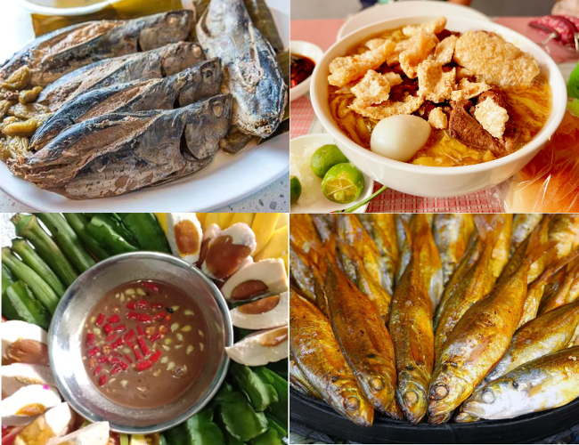
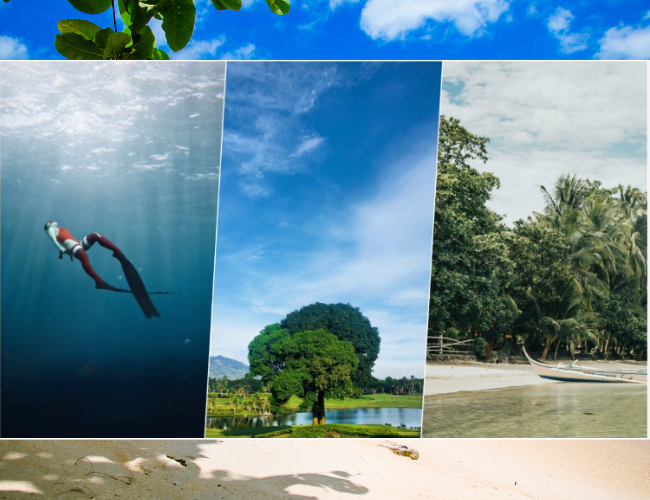
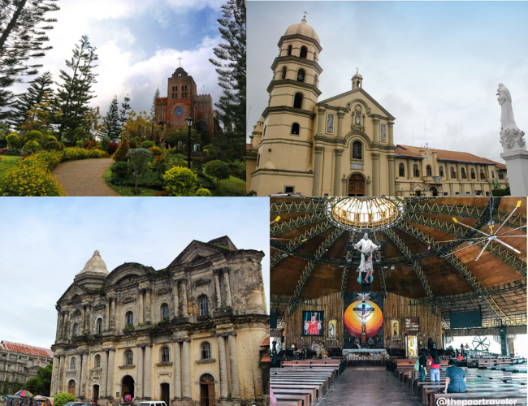

Ala Eh!
Parine Na Sa Batangas.
Parine Na Sa Batangas.
Lipa City
Taal
Lobo
Calatagan
San Juan
Verde Islands
Lemery
Nasugbu
Talisay

Batangas offers a wide variety of exciting activities and alongside this, it's also a good idea to sample some of the local delicacies and cuisine. Batangas, a coastal province that is home to several rivers and lakes, is known for its abundance of fresh seafood and freshwater fish, as well as the production of high-quality Batangas beef. To satisfy your appetite, climb on board and join us as we explore Batangueños' specialties in a one-of-a-kind foodie journey!
Batangas Lomi served with soy sauce as dip
Batangas Lomi stands apart from the rest of the nation's noodle dishes because of its thick, soft, and sticky egg noodles, as well as its savory broth. Add onion leeks, scallions, and cabbage to your toppings for additional taste in this Batangas delicacy. You may also add chicken meat, chicharron, hog liver, and squid balls as well.
Sinaing na Tulingan
This is a popular dish in the Province of Batangas which is made using tulingan, a kind of tiny tuna that is plentiful in Balayan Bay. Simmered in a clay pot with dried bilimbi and sprinkled with salt, bullet tuna which is slowly cooked or adobo is the main ingredient in this traditional Filipino dish. Salt, pepper, and garlic enhance the fish's inherent taste by percolating through the water and blending with it. Fish sauce or patis will be the final product once the combination has been processed.
Bagoong Balayan
In Batangas, Bagoóng is fermented in a huge clay jar with salt and anchovies and is considered a traditional dish of the Filipinos. Bagong Balayan from Batangas is a well-known product in the province. Fish, krill, or prawn paste fermented in salt is the traditional Bagoóng recipe. They have a strong stink, but the flavor is fantastic when paired with fried foods. These are just some of the most popular Batangas food. If you would like to explore more of these Batangas food, then having your own home investment in the province would be a good start.
Tinapa
Because tinapa is a naturally saltwater fish, this Batangas delicacy has a salty flavor.
What makes its saltwater component so delicious is the smoking procedure it goes through in order to keep it fresh longer.
In other words, the fish dish tinapa is particularly well-known in the town of Lemery, Batangas.
They also made a celebration related to this famous dish from the Province of Batangas called Tinapa Festival.
This is commonly held in the town of Lemery on the 14th day of May each year.

If tourism were a grand feast, Batangas offers a massive buffet filled with exquisite and delightful options that fit various preferences of visitors — historical sites, mouthwatering dishes from homegrown restaurants, spectacular summits, stunning beaches and secluded camping grounds, and wonderful underwater worlds!
Laiya, San Juan
Laiya Aplaya, or simply Laiya, is another seaside barangay that pretty much represents the whole town of San Juan in terms of tourism. In fact, many beach resorts in other parts of the municipality — like those in nearby Barangay Hugom — are also being marketed with the term Laiya in tow to catch more attention or spark interest. The long and wide stretch of fine light-colored sand harbors numerous resorts and hotels, ranging from budget to high-end. It has become one of the go-to weekend destinations and a venue for events such as company outings and even weddings.
Club Balai Isabel
Best known for providing a front-row seat to the majestic Taal Volcano and Taal Lake, this nine-hectare property harbors Aqua Park, a floating water park that features one of the tallest waterslides in Southeast Asia! And if that is not enough yet to fill your day with exciting activities, the resort provides other water sports activities like jet-skiing, kayaking, sailing, banana boat rides, and more. You can visit on a day trip or extend the fun by staying overnight.
Taal Heritage Town
Taal was originally located in what is now the town of San Nicolas near Taal Lake. Although commercialization is apparent, the town center still elicits that strong old town vibe with the well-preserved town hall building and ancestral houses flanking the streets. But the town’s highlight is the Basilica de San Martin de Tours (or simply Taal Basilica), said to be the biggest Catholic church in Asia. Sitting atop a hill, it definitely commands attention and is an iconic landmark. If you get hungry, you can try some of Batangas’ signature dishes like the tapang Taal and Taal longganisa. You can order these at Don Juan BBQ near Taal Market, where you can also go food tripping or pasalubong shopping.
Lipa Heritage Sites and Cuisine
Lipa might be a highly urbanized city with many modern establishments and infrastructures, but the Batangan identity is never lost. The city boasts historical sites, churches, and signature Batangas cuisine. Casa de Segunda is a well-preserved ancestral house that echoes the architectural style during the Spanish colonial period. The Metropolitan Cathedral of San Sebastian or simply Lipa Cathedral is one of oldest in Batangas and the most visited. And while you are there, order the Batangas staple merienda — lomi and Lipa-style goto. Coffee lover? Have a sip of Kapeng Barako after a meal.

Batangas is predominantly Catholic. For over 300 years, the Spaniards built a number of stunning churches and monuments all over the province. It is also home to some sites that the faithful believe to be miraculous. No wonder it is a favorite visita iglesia destination for many.
San Sebastian Cathedral, Lipa City
According to the Lipa City Tourism Council, the history of the Cathedral can be traced back to as far back as April 30, 1605, when it was administered by the Augustinians under the title “Convent of San Sebastian in Comintang.” The original building was made from only light materials. But the construction of the Cathedral that we see today, done in the Romanesque tradition, started in 1779. It has big circular dome, giant walls and columns, balconies, and arches. Standing proudly in front of the church is a bell tower, which, like the dome, is decorated with moldings.
Basilica de San Martin de Tours, Taal
The largest Catholic church in Asia, Taal Basilica is 96 meters long, 45 meters wide, and 96 meters tall. This colossal Baroque structure was made of coral stones and adobe. Sitting on top of a hill, Taal Basilica towers over the old heritage town of Taal. It is a very dominant structure and is visible in most parts of the town proper and even in some parts of the neighboring town Lemery. This is actually the second church. The original edifice, which was devastated by the eruption of Taal volcano, was in present-day San Nicolas.
Caleruega Chapel, Nasugbu
More casually called Caleruega, the Transfiguration Chapel isn’t really historic, unlike the other churches in this list. But it is one of the most picturesque, making it one of the most popular wedding venues and retreat destinations in the region. Perched on top of a garden-adorned hill, it offers a spectacular view of the Batangan countryside, with Mt. Batulao dominating the landscape. It’s the much-needed breath of fresh air in this itinerary.
Mt. Carmel Chapel, Lipa City
Known throughout Batangas as simply “Carmel,” the Monastery of Our Lady of Mt. Carmel is the site of the multiple apparitions of Mary Mediatrix of All Grace. The Virgin Mary was said to have appeared to nun Teresita Castillo at the garden here. This is also the site of the miraculous shower of petals that occurred on 24 January 1991. Its chapel is open to everyone who wish to see the statue that the Lady asked to be built in her image and venerate the Lady. The convent was actually founded in 1946, two years before the Apparition, right after the Second World War. It became the home of the Carmelites who transferred to Lipa from Manila.

Batangas has everything that makes a tourist destination in the Philippines: sandy beaches, rolling mountains, quiet farms, and spectacular views. There’s also a thriving tourist industry that ensures Batangas vacations are as convenient as they are fun. Sure, you’ve probably been to Batangas—but trust us when we say there’s always something new to discover in this sprawling province in Southern Luzon. Keep reading for the best hotels, resorts, restaurants, and things to do in Batangas for your upcoming weekend getaway.
How To Get To Batangas
Commuting to Batangas will depend on where exactly you are going, but some of the bus terminals in the metro that ply the Manila-Batangas route include: ALPS, JAM Liner, RRCG Bus, and TRITRAN Transit. Travelers driving a private car from Manila may take the Silang-Aguinaldo Highway, Tagaytay-Sta. Rosa route, or SLEX.
Where To Stay In Batangas
Few destinations near the metro offer a greater breadth of hotels, resorts, and vacation rentals than Batangas. For most travelers, the issue is narrowing down the choices! Here are a few of our Batangas staycation favorites to kick off your search.
COVID-19 Travel Requirements
Most establishments in Batangas require tourists to present a valid ID and/or a vaccination card, so make sure you have both with you at all times. Advance booking is typically recommended, especially in hotels and resorts. Additionally, the use of face masks is strictly implemented throughout the Philippines, particularly in indoor and outdoor public areas.
What to Pack for Your Batangas Travel Adventure
Make your Batangas Adventure as simple and as enjoyable as possible by packing smart. It’s amazing how much stress top travel items can save you, so choose carefully. Things like lightweight travel backpacks, for example, are ideal for short trips and allow you to move around with ease, and a passport holder will make sure you keep your documents safe at all times.
EXTRA TIPS FOR VISITING BATANGAS
This is a seven-stop itinerary, but feel free to skip or add. There are many other notable churches, but these are what I recommend not just for their historical, cultural, and religious significance to the Batanguenos, but also because they are conveniently located along an easy, smooth route.
This itinerary assumes you’ll be coming from Manila. If you’re coming from Tagaytay, Silang, Dasmarinas (Cavite), or Santa Rosa (Laguna), you might want to do it the other way around like our family does.
Start early. If you’re coming from Manila, you might want to catch the first mass at the Lipa Cathedral at 5:30am. I know it’s too early, but this is a packed itinerary. The churches are far apart and will take the entire day. Know that the Caleruega Chapel, the last stop, closes at 5:30pm.
Use a private car. It’s a lot easier. Taking the public transportation is not advisable as most people are taking a break and observing Lent, too. Having a private ride allows you to control your departure times from each spot.
Be patient. Most of the population is Catholic, and many people from neighboring provinces visit Batangas during the Holy Week, especially on Good Friday. Traffic can be terrible. Expect long queues especially at the Caysasay Chapel.
Bring water. The summer heat can be unforgiving, and the crowd doesn’t help.
Be a responsible traveler. Don’t just throw your garbage anywhere. Keep a trash bag inside your vehicle.
Batangas is a budget friendly destination. PADI diving courses are much cheaper than regular and that’s why many people decide to do a PADI course in Anilao. The accommodation and the food in the restaurants are also much cheaper compared to the other coastline destinations in the country.
Frequently Asked Questions
Q: Is Batangas accepting tourists now?
Q: Do you need a swab test to go to Batangas?
- 3-17 years old: Medical certificate issued not more than 3 days prior to arrival
- 18 years old and above: Antigen or RT PCR Negative Test Result issued within 72 hours prior to the trip
Q: What are the travel requirements going to Batangas?
A: Here’s a list of the general travel pass requirements Batangas:
Batangas Travel Requirements for FULLY VACCINATED
- Vaccination cards
Batangas Travel Requirements for PARTIALLY VACCINATED / UNVACCINATED
- 3-17 years old: Medical certificate issued not more than 3 days prior to arrival
- 18 years old and above: Antigen or RT PCR Negative Test Result issued within 72 hours prior to the trip
Disclaimer: Travel Batangas claims no credit for images featured on our blog site unless otherwise noted. All visual content is copyrighted to its respectful owners. We try to link back to original sources whenever possible. If you own the rights to any of the images, and do not wish them to appear on Travel Batangas, please contact us and they will be promptly removed. We believe in providing properThis attribution to the original author, artist or photographer. Student Presentation Only
Leave a comment
Your email address will not be published.Club Balai Isabel, Talisay